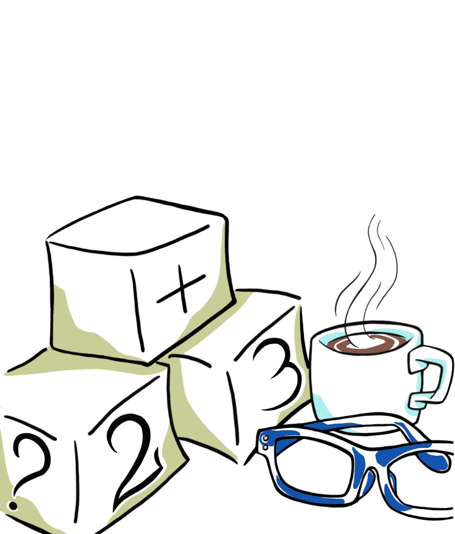

Capirci di matematica, finalmente
Version 1.2- Un libro per i grandi sulla matematica delle elementari -
"lifelong learning" incontra "riavviare il cervello"
- Capitolo 1 - Contare
- Capitolo 2 - Addizioni di moltiplicazioni
- Capitolo 3 - Togliere e tagliare a pezzi
- Capitolo 4 - Frazioni, o "divisioni pigre"
- Capitolo 5 - Arance e banane
- Capitolo 6 - Indovinelli e risposte
- Capitolo 7 - Roma e toma
- Conclusioni
- Appendice A - Roba stramba che non c'e' stata
- Copertina lato-B
Indice dei capitoli
Scritto da Andrea Valente
Un ringraziamento speciale ad Emanuela Marchetti per il supporto, i disegni e le discussioni creative.
Un ringraziamento speciale anche a Roberto Capancioni per i feedback e per essere stato il primo tester del libro.

Questo libro e' gratis ed e' distribuito sotto licenza
Creative Commons Attribution 4.0 International License
E dopo aver letto, o sfogliato, questo libro, se ti va, firma il mio guest book (il libro degli ospiti). Grazie ;)